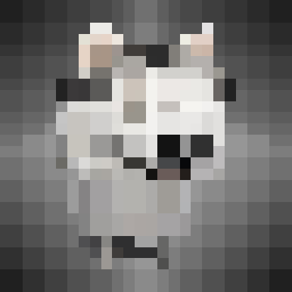
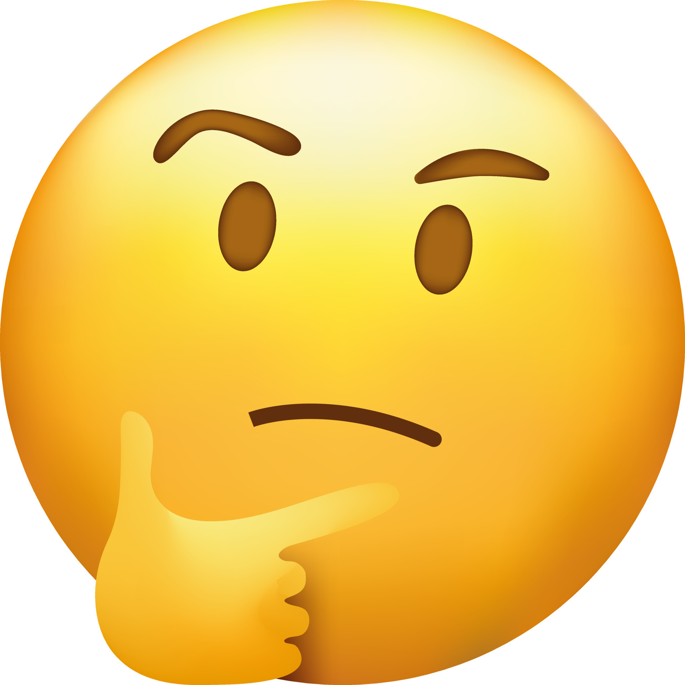

The People Behind S2
Five people. One Portuguese, four Chinese. One goal: ship the pipeline the whole project depends on.


Role Structure
Every role in S2 has a clear technical and organisational purpose. The structure is designed for a distributed team that spans two timezones and two institutions.
| Role | Member | Affiliation | Core Responsibility |
|---|---|---|---|
| Project Manager | Zhiqi ZHANG | CN · JLU | Team coordination, sprint planning, Steering Committee reporting, ASM attendance. |
| Vice PM (Shadow PM) | João Neves | PT · UTAD | Leads PT side during PM off-hours; daily async standup posts to GitHub Wiki. |
| System Architect | Haobo LIN | CN · JLU | Defines IF1 (JSON schema, sampling rate, error handling); co-authored with V1 System Architect. |
| Programmer | Pengxu CHEN | CN · JLU | Pipeline and validation development; formally cross-tests Tianze WANG's code. |
| Programmer | Tianze WANG | CN · JLU | Pipeline and validation development; formally cross-tests Pengxu CHEN's code. |
Cross-testing model: There is no dedicated Tester role in S2. Instead, the two Programmers formally review and test each other's work. This provides independent verification on every critical module while keeping the team lean.